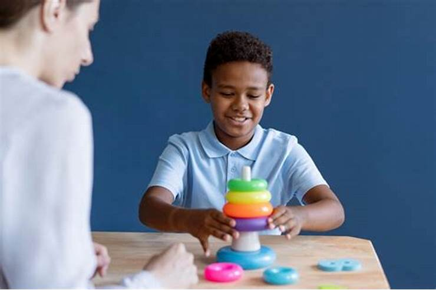

Introduction
Behavior modification is a psychotherapeutic intervention primarily used to eliminate or reduce maladaptive behavior in children or adults. While some therapies focus on changing thought processes that can affect behavior, for example, cognitive behavioral therapy, behavior modification focuses on changing specific behaviors with little consideration of a person’s thoughts or feelings. The progress and outcome of the intervention can be measured and evaluated. Functional analysis of the antecedents and consequences of the problem behavior(s) must be identified. This leads to the creation of specific target behaviors that will become the focus of change. Then, certain variables can be manipulated via reinforcers and punishments to change problem behavior(s). The goal is to eliminate or reduce maladaptive behavior.
Benefits of Behaviour Modification Techniques
- It is very effective in overcoming various disorders such as Obsessive-Compulsive Disorder (OCD), Post-Traumatic Stress Disorder (PTSD), substance abuse, and addictions. It helps people to regain and increase their confidence and improve the quality of their life.
- It improves physical and mental health by helping people resolve issues such as eating disorders, chronic pain, insomnia, depression, phobias, etc.
- Behavior modification is also a component of Parent-Child Interaction Therapy (PCIT), which teaches specific skills to the parents that they can use to help improve physical and verbal exchanges with their children. PCIT is an evidence-based intervention for preventing child abuse & neglect, helpful for children who exhibit disruptive behavior and/or have experienced trauma, those on the autism spectrum, and has been shown to decrease child’s risk of antisocial and criminal behavior later in life.
- The Triple P – Positive Parenting Program draws on social learning, cognitive therapy, behavioral modification, and developmental theory as well as an exploration into risk factors associated with the development of social and behavioral problems in children. It aims to empower parents with the skills and confidence they need to be self-sufficient and to be able to manage family issues without ongoing support.
Steps to Set Up Behaviour Modification Plan
1.Understand the Child
It is important to consider your child’s age, gender, likes, dislikes, and other factors to gauge thier response to different behaviour modification strategies. For example, young children may consider spending more time with a parent as a reward, whereas teenagers may consider it as punishment because this reduces time with their friends.
2. Understand the Behaviour to Modify
Consider the effort and time required to modify the behaviour. For example, not wasting food can be taught with positive reinforcement. But preventing the wetting of bed at night needs more time and multiple techniques.
3. Choose the Method That Works Best
For younger children, positive reinforcement methods give the desired results. But for teenagers, a combination of negative or positive punishments might be more effective. Don’t hesitate to change or come up with your methods when existing ones don’t work.
4. Create a Behaviour Modification Plan
Create a plan with rewards, consequences, and punishments specifically designed on the basis of the behaviour to be corrected in the child. When there are natural consequences for negative behaviour, make sure you consider whether the child should face a consequence or if they have had enough for the day. If you push a child too much or too less any technique may end up being ineffective.
How to Use Behaviour Modification for Children
1. Consistent Consequences
Make sure to provide the same consequences each time when the child performs a task or misbehaves. For example, if you praise your child when he switches off the light in the bathroom, make sure to praise him every time he does it until it becomes part of his routine and, and you no longer need to provide positive reinforcement.
2. Immediate Consequences
Make sure to provide rewards or punishments immediately after the child acts or reacts. If you give it after a day or a week, it will break the formation of a good habit and won’t be effective.
3. Effective Consequences
If a chosen consequence is not working, be ready to try another one until you find the one that works in modifying the child’s behaviour.
4. Same Consequences
When all the adults, including family members, teachers, caregivers, etc., provide the same consequences, then the behaviour change happens even faster.
The behaviour modification methods are adaptable to fix many issues in life. Destroying and developing new habits and behaviours not only boosts your self-confidence, but also helps you become successful in life. Go ahead and start practising these methods to have a balanced and fulfilling life.
Techniques
Positive Reinforcement
Positive reinforcement is giving rewards to kids to encourage the desired behaviour. Getting a gift is associated with positive feelings such as excitement and joy. Hence, it is one of the effective techniques in shaping behaviour modification in kids. To prevent kids from getting bored, surprise them with different rewards. Make the rewards be a combination of favourite food, objects, extra playtime, verbal prizes, surprise trips, extra TV time, etc.
Negative Reinforcement
In this technique, children are motivated to towards the desired behaviour in order to escape from unpleasant experiences created by parents, teachers, or therapists.
Positive Punishment
In this method, kids face negative consequences for negative behaviour. Here when they act undesirably, you give them an extra task that is unpleasant to perform. Hence, it is called positive punishment.
Negative Punishmentt
In negative punishment, you take away something the children enjoy as a punishment for their negative behaviour. Here as a punishment, you don’t allow them to have their favourite food, playtime, etc. The fear of losing their privilege motivates them to correct their behaviour.